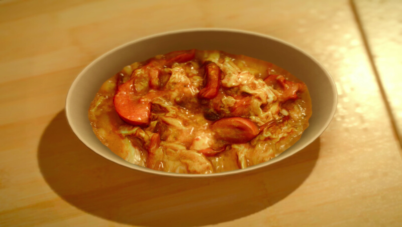

Classic Tomato and Egg Stir-Fry

A Chinese speciality and a Longwythe Rest Area favourite. A mix
of tomato and egg can never go wrong and Ignis knows it!
Ingredients
- Birdbeast Egg
- Lucian Tomato
Steps
- Read the blue and white Orienteering Checkpoint(G Poster)
on the silo outside of the Longwythe Rest Area to unlock this recipe.
- go to the JM Markets at the Longwythe Rest Area and the Prairie Outpost
to buy Lucian Tomato for 200 gil.
- Go to the Mini-Mart at Hammerhead, Aldare's at Galdin Quay
or the JM Markets at the Prairie Outpost or Old Lestallum to buy Birdbeast Egg for 20 gil.
- It's time to watch Ignis work his magic!